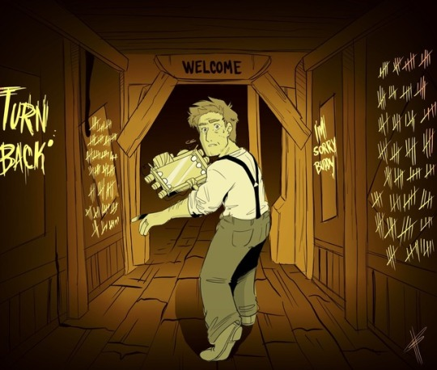
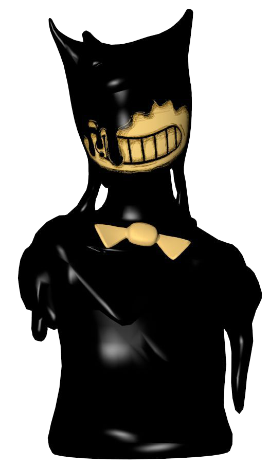
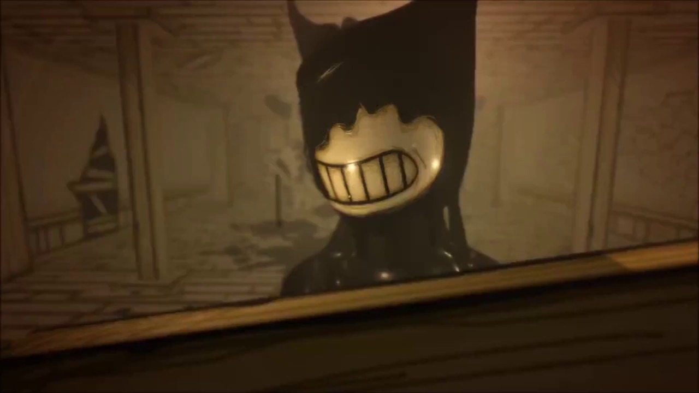
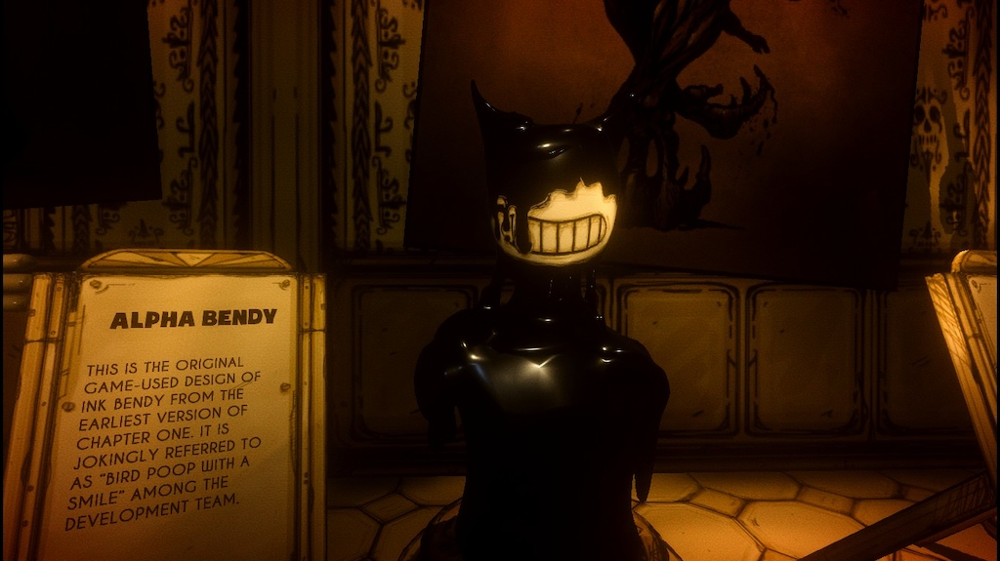
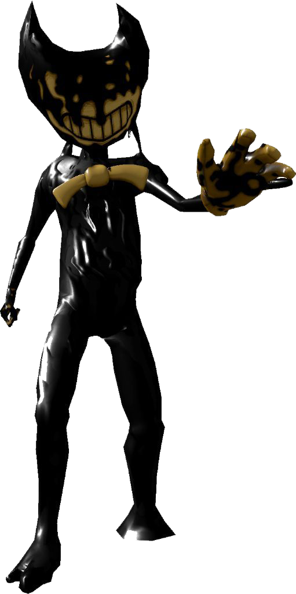
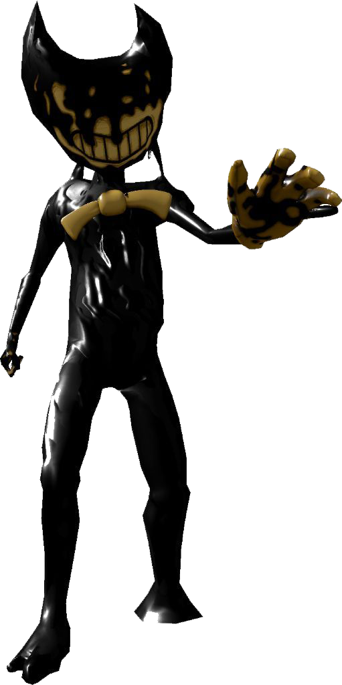
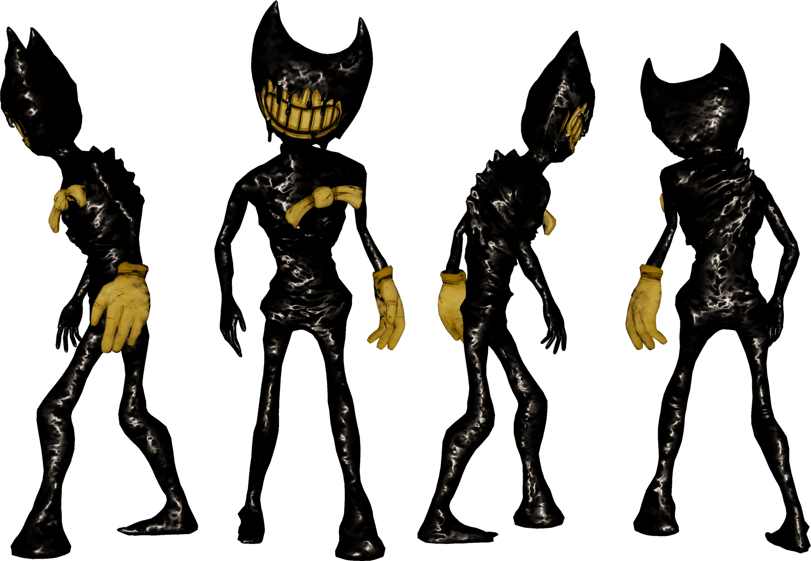
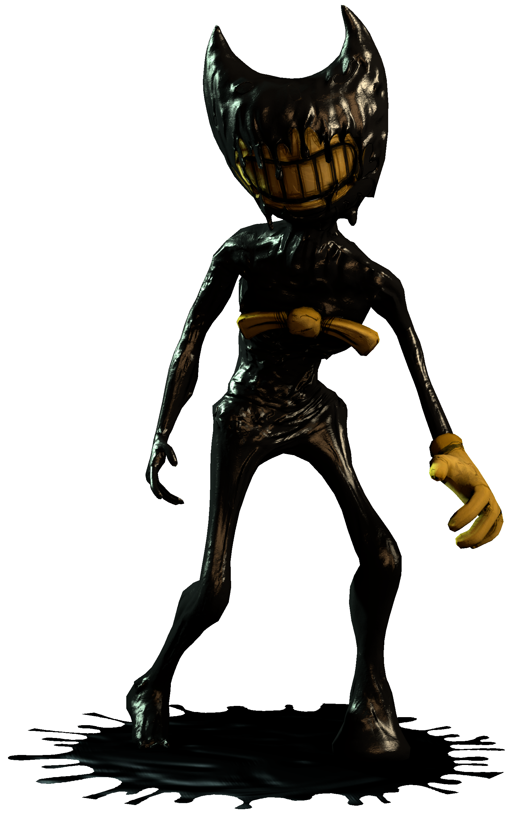
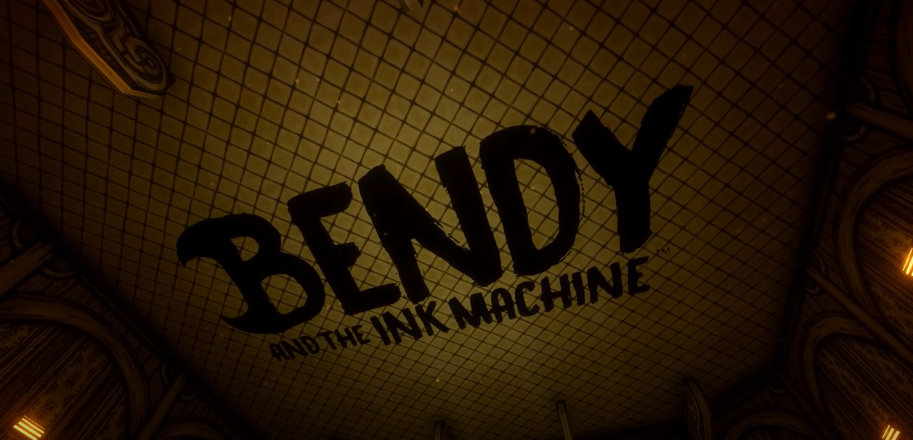

Henry Stein

Henry Stein is the main protagonist that you play in the video game Bendy and the Ink Machine. Henry is the first main character you meet. Despite the fact that The Meatly and Mike Mood (creators of Bendy and the Ink Machine) did not make a set design for Henry, he was once a business partner of the creator of Joey Drew Studios, Joey Drew, Henry Stien was the best and popular animator at the studio before leaving the company around the year 1930(and coming back 30 years later around the year 1906). It is said that Henry Stein has created the three main characters, Bendy, Boris, And Alice, as in dreams come to life, when Buddy, or Daniel Lewek, asks about the picture with the trio on it, and a man named Norman Polk told him that a man named Henry Stien made them. Henry is a soft-spoken guy who doesn't express strong emotions. He was a punctual worker, claiming to be "always on time" as he says when you save your progress by punching in.
Alpha Bendy
  Alpha Bendy was the first bendy to be created in Joey Drew Studios. Alpha Bendy was in the original version of the game, when there was only one chapter! Among the developers of Bendy and the Ink machine, Alpha Bendy is jokinly refferred to as "bird poop with a smile". Alpha bendy was also the first enemy you meet. Alpha Bendy's design was a large body, no arms, no legs. His head was a large human-like and squarish, that was later changed into a round one, with a big grin. His horns spread out which later turned into curves. In the archives chapter in the game, he seems to be missing his bowtie which is a development oversight. he may have been unable to move around but still got to scare many fans. Not much may be known about the first version of bendy but it still has a place in the Bendy and the ink machine universe for being what started it all.
Beta Bendy
 


Beta Bendy Is the second Bendy that was created in Bendy and the Ink Machine. Until The Meatly and Mike Mood released chapter four, this was the ink Bendy's form. The game had a major visual upgrade up until chapter four. Beta Bendy's design had less of a skeletal appearance, with a small right hand, and a large left hand. On his left hand there is a human-like pinky sticking out the side of the hand. His left foot looks like a puddle while his right takes on a more odly-shaped foot, because of this, he limps where ever he goes. His head is round and his right horn is higher than his left, but they both curve in. Beta Bendy's grin has less detal than former self Alfa Bendy. His bowtie was also rotated a little to give it a more messed-up look.
Ink Bendy
  Ink Bendy is the one we know today. He may be similar to the Beta version of himself, he's been upgraded and remodeled and enhanced with the new ink efects. Ink Bendy is a tall misfigurered creature, with tar-like ink. His head is the closest to Bendy than the other three. His horns a more curved than Beta Bendy or Alpha Bendy. His toothy grin is shown to shake throughout the game and his spin seems to be very crooked like a condition called scoliosis. His bowtie is a little lower and slightly tilted His right hand resembals more of a human hand, and unlike Beta Bendy, hit doesn't have a glove. Ink Bendy's right hand is in fact larger than the right only this time only has four fingers while his right holds five.